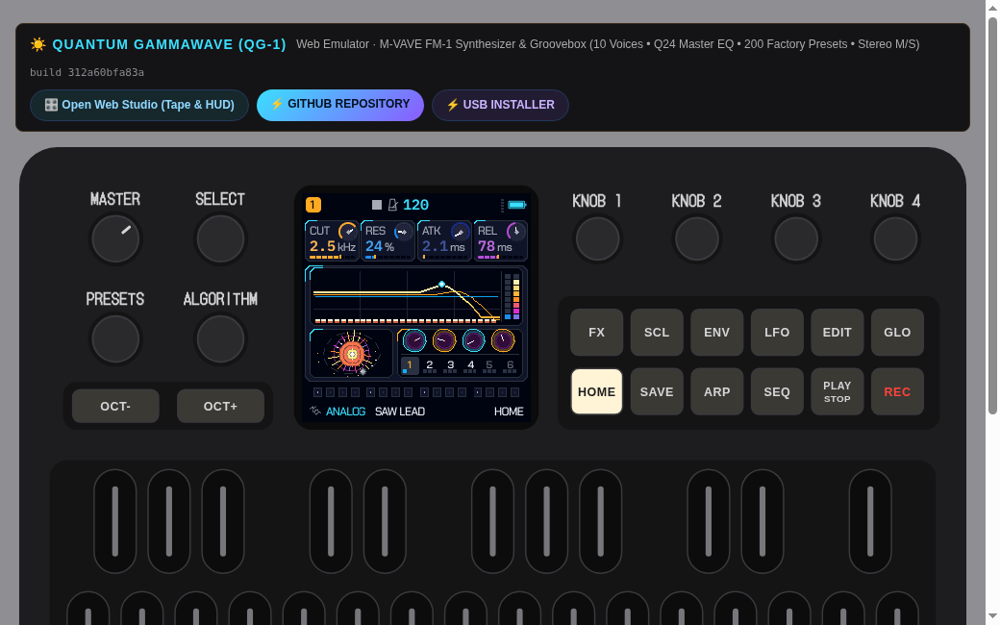
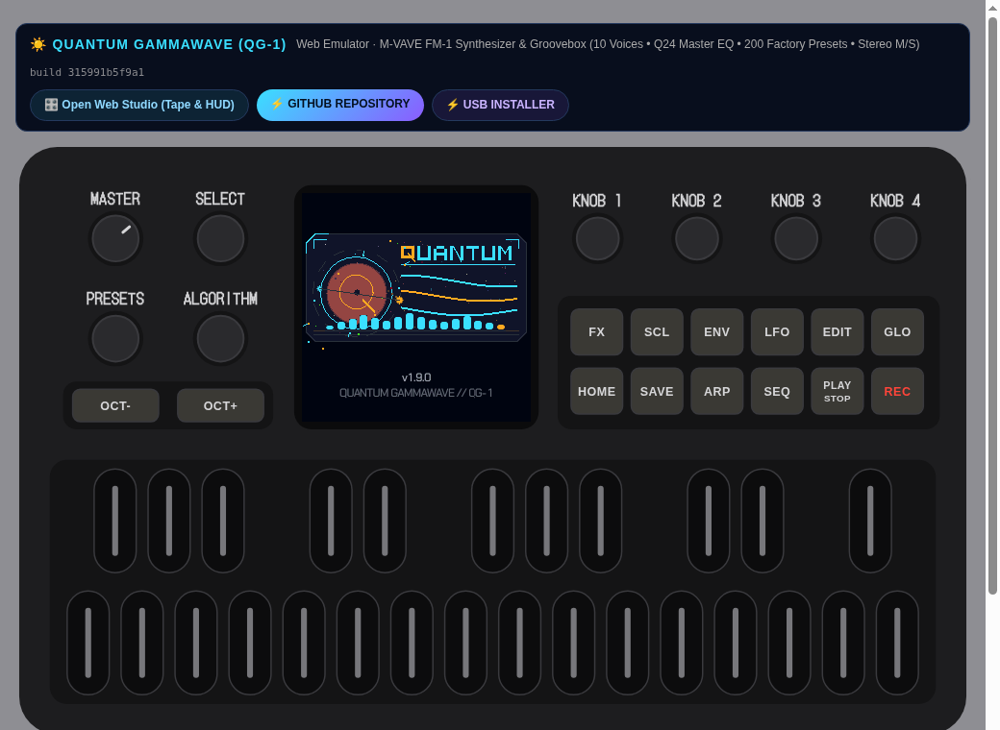
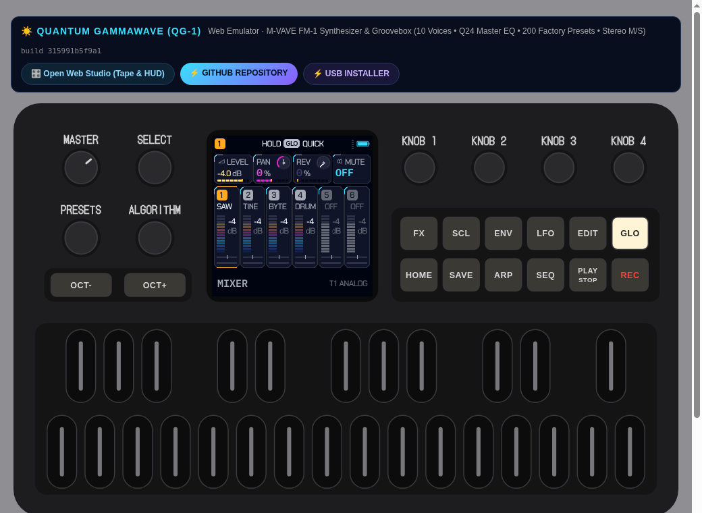
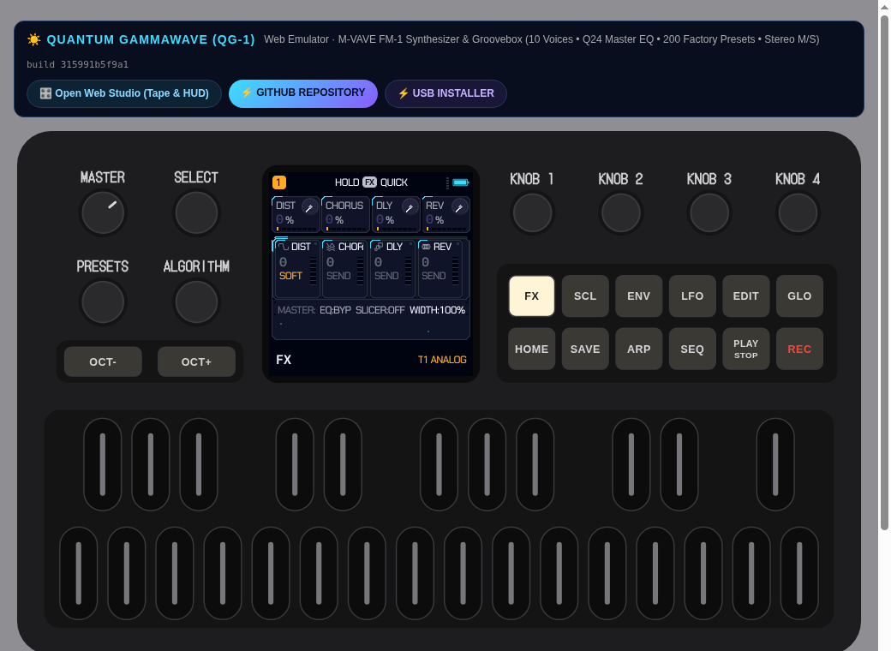
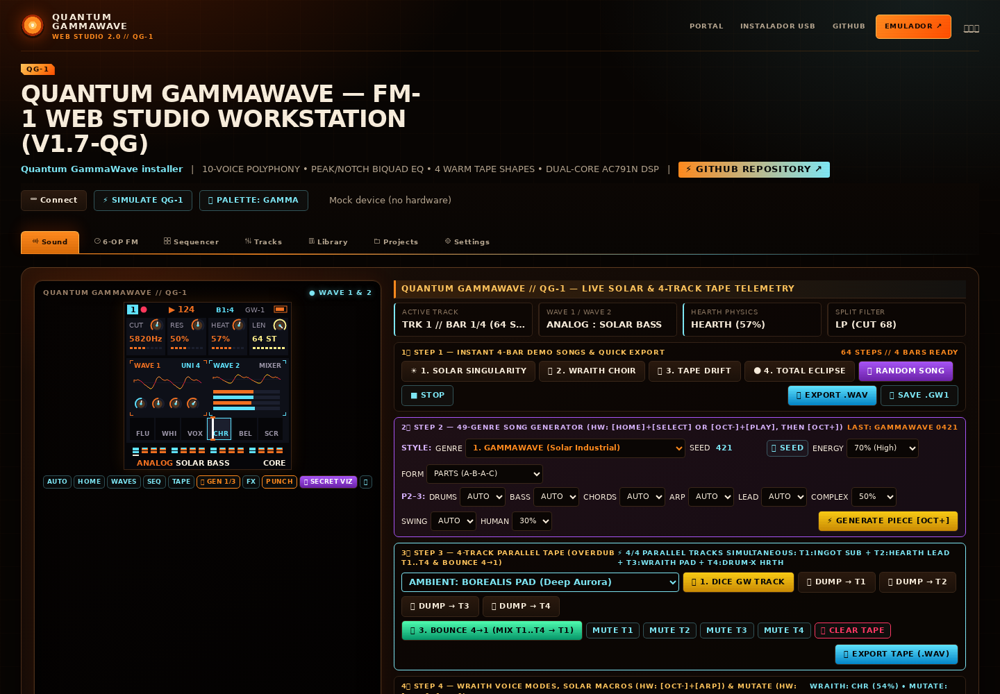
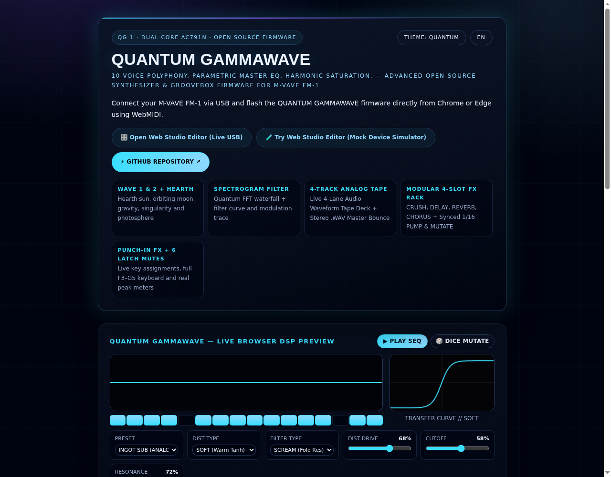

Ocho motores, una arquitectura
ANALOG, FM6, PHASE, LOFI, FORMANT, WHEEL, DRUM y NOISE. Waves morphing, filtros LP/HP/BP/COMB/VOWEL/SCREAM y matriz de modulación.
200 PRESETS · 17 PALETASQuantum GammaWave convierte la FM-1 en un instrumento completo: seis pistas, diez voces, ocho motores de síntesis, secuenciador y un Web Studio que edita el sonido real por Web MIDI.
Web Emulator y Web Studio disponibles sin instalar nada.

Cuatro entradas al mismo proyecto. El Web Site es la principal y desde ahí se llega al resto; el instalador USB es la única vía de escritura y ninguna ruta depende de una redirección.
El portal principal: firmware, capturas reales del build publicado, instalación verificada y versiones.
Entrar al sitio → 02 / WEB EMULATOR Web Emulator /emulator/El mismo firmware compilado a WebAssembly, con el mapa Punch-in FX, LATCH y el commit del build publicado.
Abrir Web Emulator ↗ 03 / WEB STUDIO · WEBAPP / EDITOR Web Studio · Webapp / Editor /webapp/editor/Editor del sonido real por Web MIDI, secuenciador de 16 pasos, mixer de seis pistas y proyectos.
Entrar al estudio ↗ 04 / USB INSTALLER USB Installer /webapp/installer/Identidad FM-1, tamaño del paquete y SHA-256 comprobados antes de escribir un solo byte. Incluye Verify only: lee la identidad del FM-1 y no envía ninguna trama de escritura.
Abrir instalador ↗El DSP de la FM-1 y el Web Studio comparten el mismo protocolo y los mismos parámetros. Lo que ves es lo que el firmware ejecuta, no una capa visual desconectada.
ANALOG, FM6, PHASE, LOFI, FORMANT, WHEEL, DRUM y NOISE. Waves morphing, filtros LP/HP/BP/COMB/VOWEL/SCREAM y matriz de modulación.
200 PRESETS · 17 PALETASCuatro compases, hasta 16 pasos por página, probabilidad, ratchets, swing y mutación. Los patrones se escriben y se mutan en el instrumento, no son un demo de audio.
A-A-A-A' · EUCLID · FEELLow Shelf, High Shelf, Peak, HPF y LPF con biquad de precisión fija. Punch-in FX, compresor, duck y cuatro saturaciones cálidas.
CURVA EN PANTALLA + WEB STUDIOEspectro reactivo al audio real, sol Hearth con corona y partículas, luna orbitando, franja de seis pistas y visualizador a pantalla completa. Todo dibujado por el firmware en 240 × 240, sin bitmaps en flash.
PARTÍCULAS CON LÍMITES · CALIDAD AJUSTABLEEdición en vivo, backup de proyectos, biblioteca de sonidos, importación FM6 y actualización por USB desde el navegador.
WEB MIDI · SYSEXIdentidad FM-1, tamaño, estructura del paquete y SHA-256 obligatorio antes de escribir. Reanudación del loader si se corta el USB.
INTEGRIDAD ≠ FIRMA · LEER LÍMITESPantallas capturadas del emulador y del sitio publicados. La identidad Quantum recorre firmware, Web Emulator, Web Studio e instalador.





Diseñá el sonido, escribí pasos, mezclá seis pistas y mirá la pantalla de la FM-1 en vivo. Si no hay hardware, el simulador integrado mantiene todo el flujo de trabajo.
El instalador web funciona por USB-MIDI. No requiere drivers especiales en Chrome o Edge, pero sí un cable de datos y el paquete correcto.
FM-1_9xx. El instalador se niega a escribir en otro modelo o en un paquete de otra identidad.| Elemento | Estado | Verificación |
|---|---|---|
| M-VAVE FM-1 / JieLi AC791N | SÍ | Toolchain y mapa del SDK; build target reproducible. |
| Web Emulator | SÍ | Compila el mismo firmware y compara el DSP nativo bit a bit. |
| Web Studio por Web MIDI | SÍ | Protocolo y dispositivo simulado en la suite web. |
| Instalador USB | CONDICIONADO | Integridad y límites probados en host; sin firma ni prueba física. |
| Recuperación tras brick | NO VERIFICADA | Requiere bootloader/partition support que este proyecto no modifica. |
Estos datos se leen del firmware/versions.json del despliegue. Si el archivo no está disponible, la página lo dice en vez de inventar un hash.
Integridad verificable. La autenticidad del editor no está firmada.
El EQ maestro deja de divergir en 20 Hz: sus estados llevan 10 bits fraccionarios más, así que el polo deja de integrarse (entrada DC 1000 daba 1 971 664; ahora da 13 492). La base mantiene 10 voces, el EQ maestro endurecido, el teclado Punch-in FX rediseñado y la biblioteca de 200 sonidos. En v1.8.9 los cuatro estados de retardo del EQ usan la misma escala: el canal derecho ya no pierde su EQ bloque tras bloque. El sitio y el Web Studio 2.0 son parte de esta entrega; la firma de paquetes y el arranque seguro quedan fuera hasta tener soporte real de bootloader.
Leer changelog completo ↗El repositorio conserva el historial, las licencias y las fuentes de cada artefacto. La web es la entrada; el código es la verdad.
Your voluntary contribution helps support development, maintenance, testing and future improvements.
Free software, GPL-3.0-only: donating changes nothing about what you can use, and is never required.